ABOUT US
STUDENTS
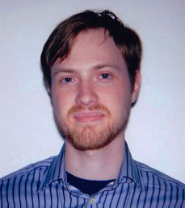 Evan Applegate, MS Candidate Sarah Bennett, PhD Candidate
Sarah Bennett, PhD Candidate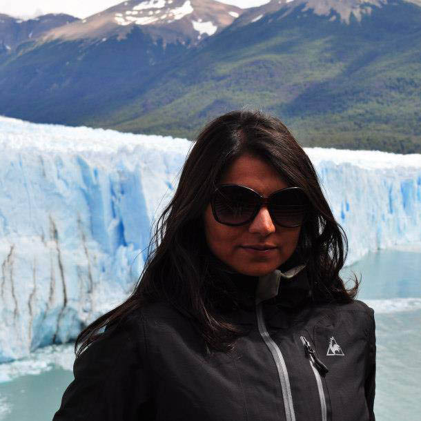 Constanza Bravo, Certificate Student
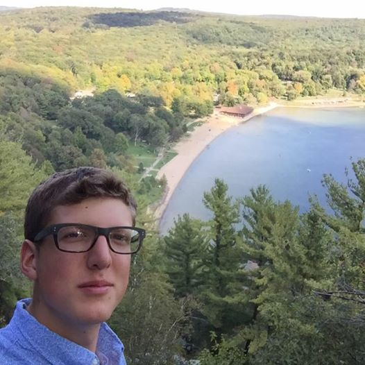 Robert Darlington, Undergraduate Student
Scott Farley, MS Candidate
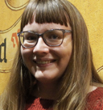 Katie Hardwick, Certificate Student
 Daniel Huffman, Honorary Fellow
Daniel Huffman, Honorary Fellow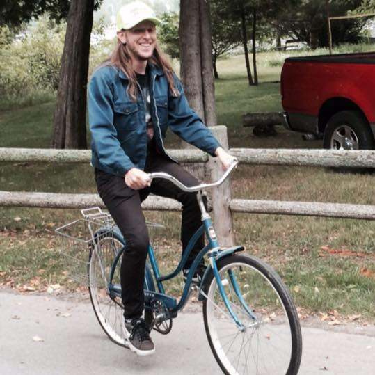 Mitch Johnson, Certificate Student
Meghan Kelly, PhD Candidate
 Katie Kowalsky, Undergraduate Student
Katie Kowalsky, Undergraduate Student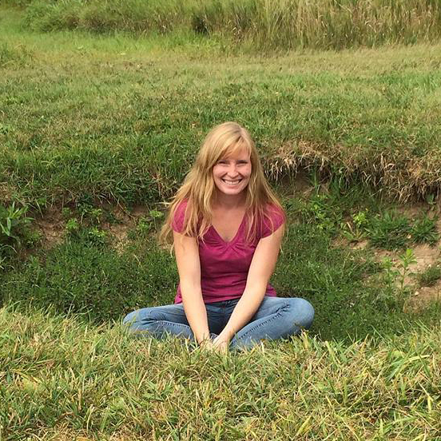 Calla Little, Undergraduate Student
Eric Nost, PhD Candidate
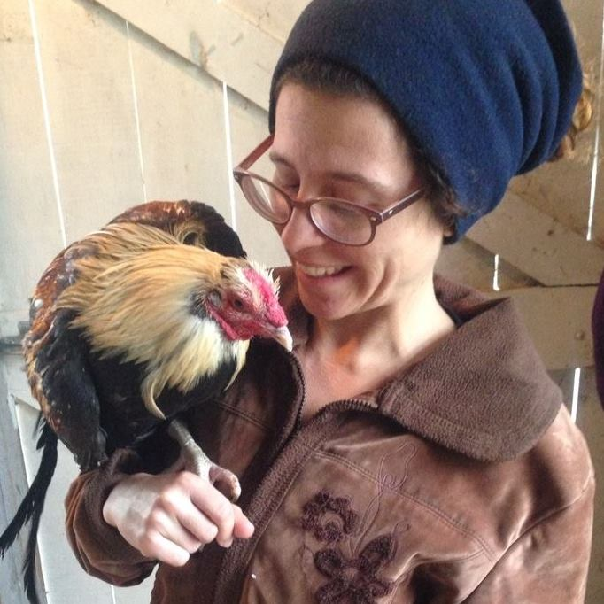 Heather Rosenfeld, PhD Candidate
 Carl Sack, PhD Candidate
Carl Sack, PhD Candidate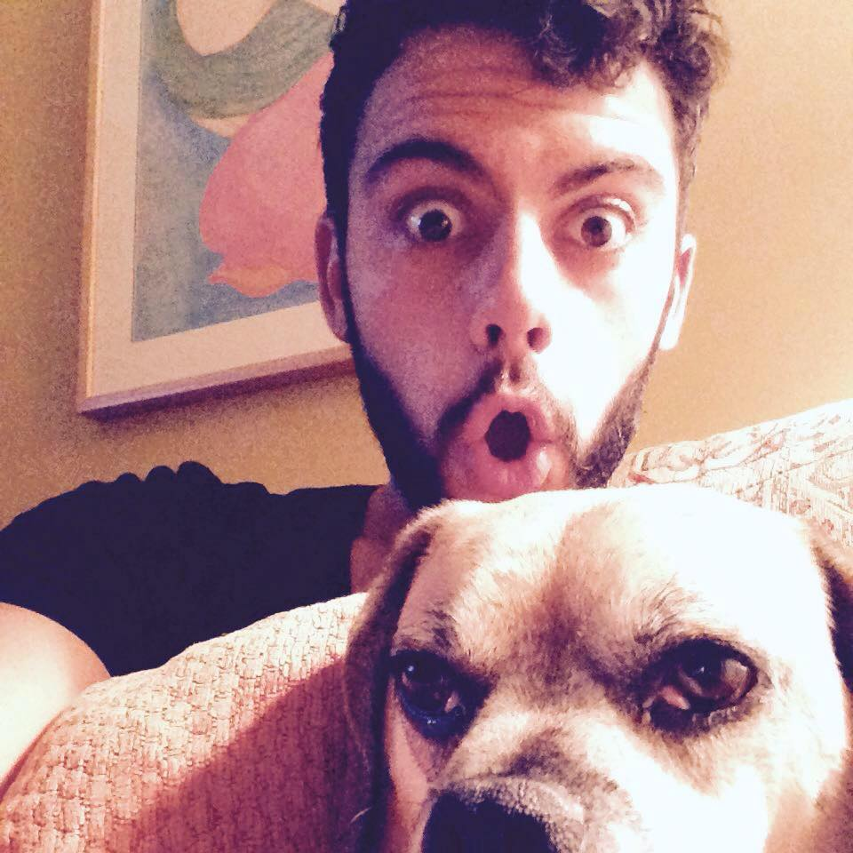 Jacob Sanchez, Undergraduate Student
Zihan Song, MS Candidate
Robin Tolochko, MS Candidate
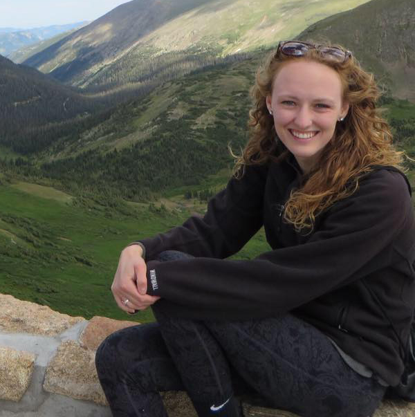 Clare Trainor, Undergraduate Student
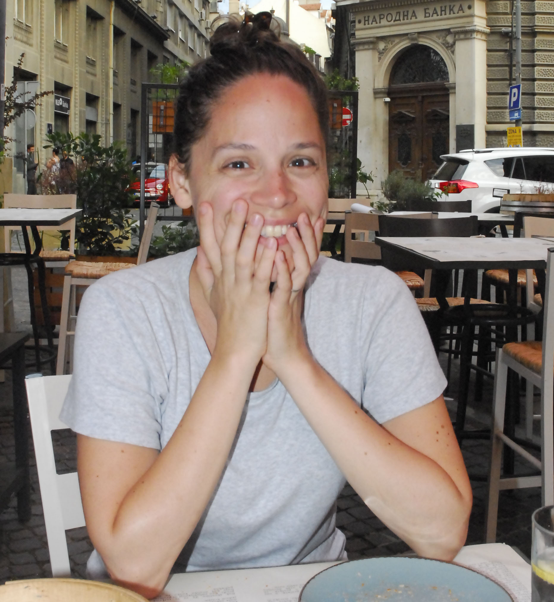 Ruth Trumble, PhD Candidate
Kristen Vincent, MS Candidate
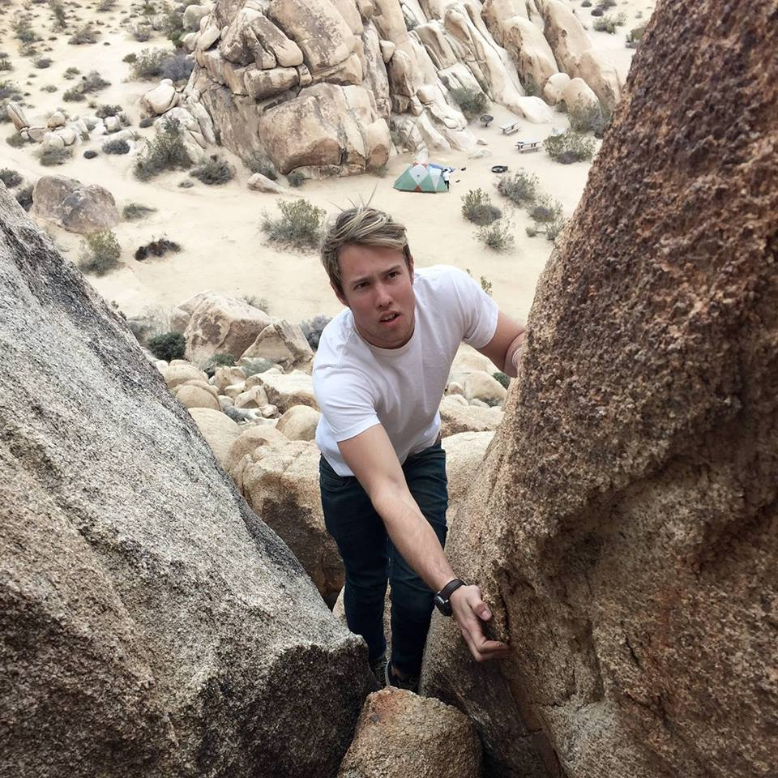 Soren Walljasper, Undergraduate Student